The goal here is to apply learning algorithms online, to classify ladar points into one of five categories: ground (supporting surface), vegetation, facade, pole, and wire.
The loss function of a multiclass SVM can be defined as:
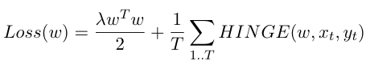Here the Hingle Loss for the multiclass case is defined as:
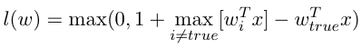From the above Hinge Loss function we select the prediction p = argmax[wi^T x]
Overall the accuracy of using this algorithm was between 92-95% depending on the dataset. This could be boosted up by selecting parameters using corss-validation.
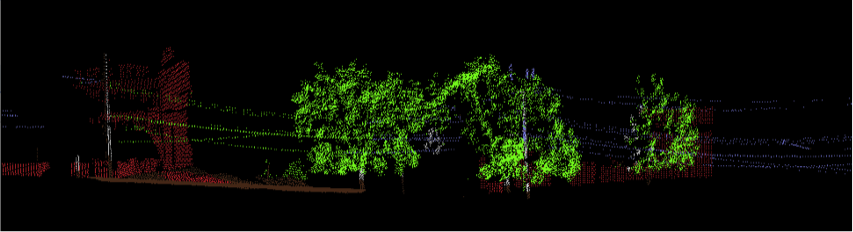 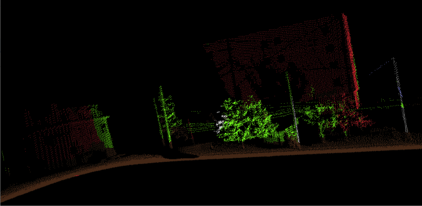Support Vector machine is a common classifier in the linear space. Here we implement an online version of SVM incorporating the Radial Basis kernel function:
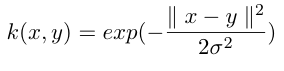The general Loss function is the same as described previously. The kernel function substitutes the linear decision boundary. For our implementation we use the 'sliding window' mechanism. Therefore we were storing no more than 2000 Support Vectors for each class
The kernel function helps perform much better yielding >97% accuracy. This is intuitive since the separation boundary does not need to be linear any more. However the kernelized version of SVM is computationally more intense.
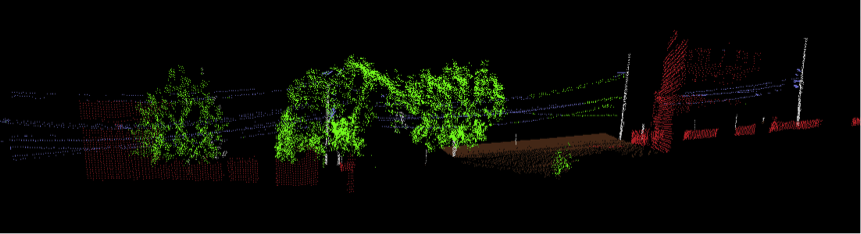 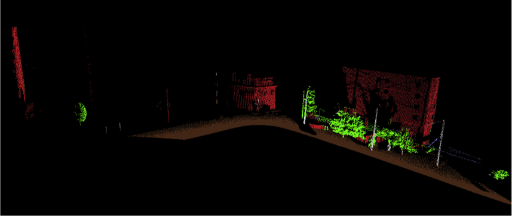
The goal here is to localize a robot lost in Wean hall through the laser dataset and odometry readings from the robot. The particle filter has been developed in C++ and we incorporate OpenCV for the frontend. A probabilistic occupancy map of Wean Hall has been provided to us along with the log data from the robot. Since we have zero initial estimate of ground truth we start our model by randomly picking 10000 particles all over the map. A particle filter incorporates the following 3 steps:
1) Motion Model: Implements the motion of particles based on the odometry readings and a gaussian noise model.
2) Sensor Model: Checks the accuracy of each particle to justify their existence. This is done by attaching a weight to each particle based on its laser readings (zk) and the readings it should have measured (zk∗) according to the map. Weights are assigned through a probabilistic obervation model.
3) Resampling: Throws out low weighted particles and duplicates the good ones. Various schemes exist, we chose Low-Variance Resampling.
The key element in any mapping problem is to calculate the posterior over maps given some control inputs (x) and sensor measurements(z). We find evidence grid as the most convenient method for mapping in 3 Dimensions on large amounts of data. An evidence grid is a uniform discretization of space into cells, where each cell value represents the degree of belief that the cell is occupied. In our case each cell is a cubic block or voxel. Therefore we breakdown the problem of estimating the map into a collection of seperate problems. One drawback of this representation is that it fails to encode dependencies between neighboring cells.
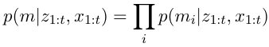Sensor measurements can then be integrated using the technique introduced by Moravec and Elfes
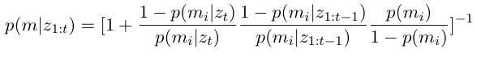This estimation can be converted to the logOdds form, making it numerically easier and update faster. Here we take the common assumption of a uniform prior(P (n) = 0.5).
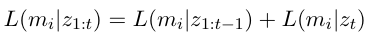Lastly, in order to overcome any overconfidence in the map, Yguel et al. proposed a clamping
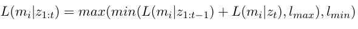The basis of this implementation is similar to the one described previosuly. However, this localization model was implemented on a 3-Dimensional environment. The PF ran in 4 dimensions ie x, y, z and yaw. We ignored the roll and pitch axes since the deviations in odometry was comparatively smaller. Yet the computational complexity of the algorithm was enormous.
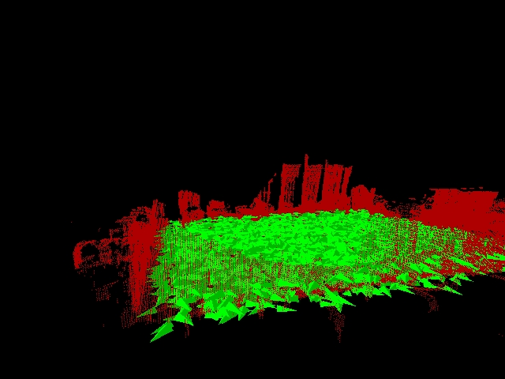 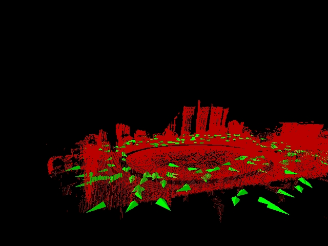One floating particle to test the observation model:
Fully functional particle filter. Very slow to converge: